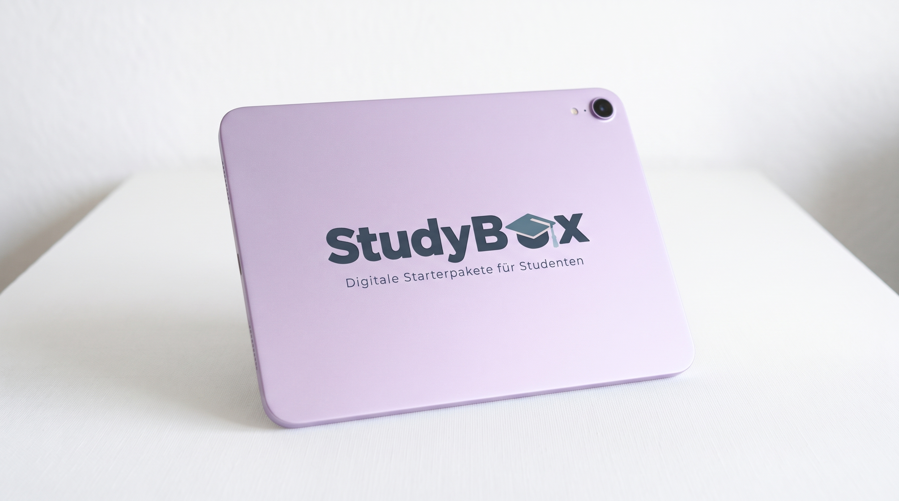
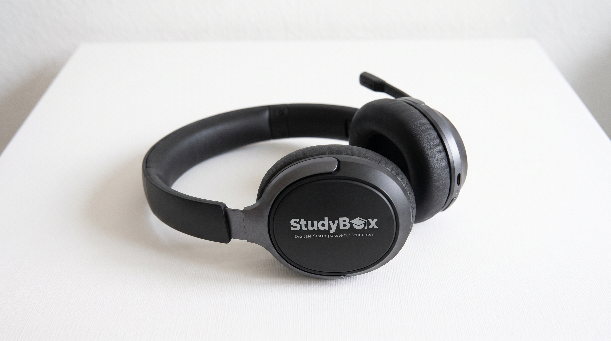

StudyBox Wirtschaft & Management Bundle
Das Wirtschaft & Management Bundle wurde für Studierende der Betriebswirtschaftslehre und Immobilienwirtschaft zusammengestellt. Es unterstützt dich bei Vorlesungen, Präsentationen, Tabellen, Recherchen und der Organisation deines Studienalltags.
Warum dieses Bundle?
Im wirtschaftlichen Studium gehören Präsentationen, Recherche, Tabellenkalkulationen und schriftliche Arbeiten zum Alltag. Das Bundle bietet die grundlegende Ausstattung für das Lernen an der Hochschule, im Unternehmen und unterwegs.
- Betriebswirtschaftslehre, zum Beispiel Industrie, Handel, Bank- und Versicherungswesen
- Marketing, Personal und Logistik
- Immobilienwirtschaft
Technische Richtwerte für Wirtschaft und Management
| Studienbereich | Arbeitsspeicher | Interner Speicher | Tablet |
|---|---|---|---|
| Wirtschaft und Management | 8 GB | 256 GB | Nützlich fürs Mitschreiben |

Notebook
Das Notebook eignet sich für Vorlesungsunterlagen, Präsentationen, Tabellenkalkulationen, Recherchen und schriftliche Arbeiten. Es unterstützt dich beim Lernen an der Hochschule und in der Praxisphase.
- Geeignet für Office-Anwendungen
- Unterstützt Recherche und schriftliche Arbeiten
- Praktisch für Studium und Praxisphase

Tablet
Das Tablet ist eine mobile Ergänzung für Vorlesungen und eignet sich zum Mitschreiben sowie zum Lesen digitaler Lernunterlagen.
- Nützlich für digitale Mitschriften
- Für Lernunterlagen und Skripte
- Mobil im Studienalltag einsetzbar

Kopfhörer
Die Kopfhörer eignen sich für Online-Vorlesungen, digitale Besprechungen und konzentriertes Lernen.
- Für Online-Vorlesungen und Besprechungen
- Unterstützt konzentriertes Lernen
- Praktisch für unterwegs

Maus
Die Maus erleichtert die Arbeit am Notebook und die Navigation durch Dokumente, Tabellen und Präsentationen.
- Präzise Steuerung
- Für den täglichen Einsatz am Notebook
- Praktisch für längere Arbeitsphasen

Laptoptasche
Die Laptoptasche erleichtert den Transport des Notebooks und der Studienutensilien zwischen Hochschule, Unternehmen und Zuhause.
- Für den Transport im Studienalltag
- Schützt das Notebook unterwegs
- Für Hochschule und Praxisphase